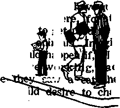

Acing the Future Without Fear
PAGE 5
Eyes for the Blind
PAGE 9
The Ragpicker and the Gi
PAGE 13
Letter to a Doctor
PAGE 4
JANUARY 22, 1958
THE MISSION OF THIS JOURNAL
THAT that are able to keep you awake to the vital Issues of our timet must be unfettered by censorship and selfish interests, "AwokeF' not so fetters. It recognizes facts, faces facts, is free to publish facts. It is not bound by political ambitions or obligations; it is unhampered by advertisers whose toes must not be trodden on; it is unprejudiced by tradition of'creeds. Th!t iournal keeps Itself free that it may speak freely to you. But it does not abuse its freedom. It maintains integrity to truth.
"Awake!" uses the regular news channels, but is not dependent on them. Its own correspondents are on all continents, in scores of nations. From the four corners of the earth their uncensored, on-the-scenes reports come to you through these columns. This journal’s viewpoint is not narrow, but ts international. It is read in many nations, in many languages, by persons of all ages. Through its pages many fields of knowledge pass in review—government, commerce, religion, history, geography, science, social conditions, natural wonders—why, its coverage is as broad as the earth and as high as the heavens.
"Awake!" pledges itself to righteous principles, to exposing hidden foes and subtle dangers, to championing freedom for oil, to comforting mourners and strengthening those disheartened by the failures of a delinquent world, reflecting sure hope for the establishment of a righteous New World.
Get acquainted with “Awake!" Keep awake by reading "Awake!"
Published Ssinino»rTHvr by
WATCHTOWER BIBLE AND TRACT SOCIETY OF NEW YORK, INC, 117 Adama Street Brooklyn 1, N.Y., U.S.A,
N. H. KjfouBi President Grant Bcfjtke,
Printing this issue: 2,600,000
Five cent* * copy
“Mwtur K ptWkW la th fallowing 17
Semimonthly—Afrikaans, Danlah, Dutch, English,, Finnish,
German,, Greek,, Italian,, Japanese, Korean, PtrtgtMe, Spanish, Welsh.
Quarterly—Canada,, Indonesian, Icelandic.
yearly subscription rates tfllot for semimonthly editions
Afl«rl«a, U.S., 117 Adams St, Brooklyn 1, N.Y, |1 Mitral 11, 11 Beresford Rd., StrathHeid, N.S W. 8/-Canada, 150 Ave. Toronto 19, Ont. tl
England, ^4 Garen ftrtsce, if. -J
Nav Inland, P.O. Box 80, Wellington C. 1
South Africa, Private Bag, Braamfontein, Tvi.
Subscriptions may be paid half above rates.
Remittances should be sent to the office In your country jn compliance with regulations to guarantee safe delivery; of Tnaoey. Remittances are accepted at Brooklyn from countries where no rftee la located, by international money enter only. Sutoaription rats in different countries are even stated ?a local currency. Bailee at expiration (with renewal blank) la sent at least two issues before subscription expires, ChNigo of addrm when sent te ow afltee may be expected effective within one month Rand pour old as well in my address,
Entered as Second-class matter at Brooklyn, N.Y.
Printed in U.S.A.
Tha Blfeh trtAilrtlad ■«< fa "AeUaf” fr th Uter Mrld Trwliileb af the Holy Wlptuei Pbae rtJw tra«sJ*lJaiw m md the follavJffi jjflhWk a*JJJ WJffd ft* rfiteUoM;
AS - American Standard Version AT - An American Translation AV — Authorised Version (1611) Da - J. n. Darby’s version
Dw - Catholic Douay version ED - The Emphatic Diaglott JP — Jewish Publication Society Le - Isaac Leeser’s version
Moffatt - James Moffatt’s version Ro - J. B. Rotherham’s version JEB - Revised Standard Version Yff — Robert Young’s version
CONTENTS
Facing the Future Without Fear
A Materialistic Civilization Doomed
Communism Criticized by an
"Your Word Is Truth” Is Our Bible the Right One?
Jehovah’s Witnesses Preach in All the
The Age of
MANY a shopper has been stopped by the tempting appearance of a box of large, luscious berries sitting on a fruit Stand. But when he arrived home with the box he found its appearance was deceiving. Instead of being filled with large berries it was filled with small ones, with only a sprinkling of large berries over the top. It was not what it had appeared to be.
This box of berries illustrates the age we live in. It is an age of deception It is an age that puts emphasis on outward appearances; and those appearances, more often than not, cover contrary facts. Deception exists from the market place to the political circle and from the home to the church. Everywhere a person turns he is confronted with it.
In newspapers and magazines, on billboards and posters, on radio and television, deception hides in advertisements to trip the unwary. Advertisers create illusionary impressions of the products they sell.
Many merchants will advertise a sale on certain items that appears to be a real saving. But here again appearances are deceiving. Instead of offering the items from their standard stock at a lower price they buy a special stock of cheaply made goods and put these out during the sale. What people thought was a bargain was no bargain at all.
Deception is not difficult in mechanical and electrical products. People are generally ignorant of what to look for. Such products can appear of good quality outside but lack it inside.
Politics is little different from the business world. It too has deception as a close companion. Many political leaders put on the appearance of being keenly interested in the people’s welfare when in actual fact they are interested in only their own.
Governmental rulers feed their people propaganda in order to mold public thinking into a pattern they approve. The propaganda is not truthful facts but rather halftruths, distortions and downright lies.
Many wealthy men have also used deception to their own advantage. They put on the appearance of being interested in helping humanity. They give large sums of money for establishing research foundations, hospitals, libraries and other public projects. People speak well of them, little realizing the real motives behind it all. It is not love for humanity that moves such men but love for themselves. They want favorable -publicity, public esteem
and their names perpetuated by the buildings and organizations they financed.
Some of these men operate businesses that produce products that are injurious to human health and even destructive of life. Does this not prove false their claims of having the welfare of humanity close to their hearts? if the foreign investments of those men were endangered they would not hesitate to pressure a nation into war to protect them. What these men appear to be is not what they actually are.
The same can be said of many individuals among the common people. They are oftentimes the ones who are well spoken of by their fellow church members and are respected in the community as good Christians. Yet in many ways they violate the laws of God. Some readily lie when it is to their advantage to do so. They will even teach their children to lie by sending them to the door to tell an unwelcomed visitor that they are not home. Others are guilty of' stealing from their employers, while others commit immoral acts. Then there are those who hate others because of racial or religious differences, even though Christ said to ‘love your neighbor as yourself.’ People who violate these Scriptural laws are not Christians.
They are like buildings that have a beautiful outward appearance but inside are dirty, disorderly and weakly built. Jesus used this comparison when speaking about the religious leaders of his day, who appeared outwardly to be what they were not. “Woe to you, scribes and Pharisees, hypocrites.' because you resemble whitewashed graves, which outwardly indeed appear beautiful but inside are full of dead men’s bones and of every kind of un-eleanness. In that way you also, outwardly indeed, appear righteous to men, but inside you are full of hypocrisy and lawlessness.” —Matt. 23:27, 28.
Christendom is overrun with people like those scribes and Pharisees, They violate God’s laws in their everyday living while at the saiiie time claiming to serve him. While their appearance of being Christian may deceive other people it does not deceive God. “For not the way man sees [is the way God sees], because mere man sees what appears to the eyes, but, as for Jehovah, he sees what the heart is.” —1 Sam. 16:7.
The outward appearance of piety put on by religious leaders in this twentieth century can be just as deceiving as it was with the religious leaders of the first century. Contrary to popular belief a religious garment does not signify a godly man under that garment. if it did, why have so many of such men violated God’s laws by being friends of the world, by blessing wars and weapons of war, by adopting paganisms and by persecuting Christians who educate people in the Bible, having them assaulted by mobs, beaten and thrown into prison? Religious men with an appearance of piety were also the ones who had multitudes fiendishly tortured during the Inquisition. True godliness is more than a religious garment and a pious smile.
The actions of such persons reflect the personality of the invisible ruler of this world, who puts on the appearance of being an “angel of light.” “It is therefore nothing great if his ministers also keep transforming themselves into ministers of righteousness.” (2 Cor. 11:14, 15) These false ministers use every possible means to impress people through appearances, but not so with God’s true servants. They have no distinguishing dress or exalting titles. They move quietly among the people, building up knowledge and faith in God’s Word as well as hope in the promised kingdom. That kingdom is mankind’s only hope for a righteous world free from every form of deception.
Facing
without
But how?

Fear has been both a friend and an enemy of man since the garden of Eden. Today, however, it is taking a shacking tall in physical and emotional health and happiness. What is the cause of fear? How can mankind face the future without it?
universal tension and discomfort, you are told to “stop worrying; relax and forget it!”
PEOPLE the world over are living in a period of intense anxiety and fear of the future. The free fear enslavement. The enslaved fear annihilation. The capitalists fear the Communists. The Communists fear the capitalists. The rich fear an economic upheaval. The poor fear a depression. There are the constant tensions and fears of push-button warfare with rockets and missiles using atomic and hydrogen warheads, the fears of producing a Frankenstein monster in the form of automation, the fears of epidemics of new diseases, the fears of growing old, of being alone and of death. Combine all these fears and perhaps only then can you appreciate the impact of fear and anxiety in our day-today existence.
Carefully placed posters point an ominous finger at you to remind you that “one out of five will die of cancer,” that “one out of every 10 persons in the nation is suffering from mental ailment,” that tuberculosis, heart disease and arthritis are out to get you, and if they fail, some reckless driver or psychopath will. Everywhere people are being shocked into destructive anxiety. Yet, in the presence of this uni-
It does no good to tell one not to fear, because fear is real. It is a part of everyday life. Evil and pain are realities. Sorrow and death and the horrors of war are real. The memories of the atrocities of Hitler, Mussolini and Stalin are real. The reported crimes of Dachau, Buchenwald, Bergen-Belsen and other infamous concentration camps, notorious for their revolting, sadistic brutality and fiendishness, are real. The atomic-leveled cities of Hiroshima and Nagasaki, the ■ war-maimed bodies of men, women and children, the gouged-out buildings and ruined villages of England, Europe, Africa and Asia all unite to testify of the reality of fear making this an age of fear.
Today tensions have mounted to such an unbearable crisis that the world is at the breaking point. Reaction in the West to recent Russian scientific advances was one of hysteria. There was panicky thinking in high and low places of government, a frenetic rush into moon-making, rocket and missile launching. Statesmen, tried desperately to steady the rattled nerves of the people, assuring them that there was “no need for panic.” President Eisenhower did
his best to calm the nation, stating that he saw no "reason to grow hysterical,” that his apprehensions have not been raised “one iota” over Russian successes. But many wondered whether the president himself was not whistling in the dark to keep his own nerves from cracking.
Everywhere fear and despair fill the minds of thoughtful men. U.S. News & World Report said editorially: “Wherever one turns, fear is uppermost Many governments are afraid of each other. Alliances and counter-alliances are the order of the day.... What is the answer to it all?” Adlai E, Stevenson, former United States Democratic presidential candidate, asks: Why "have we of late grown afraid of ourselves? Why have we of late acted as though the whole of this nation is a security risk? Why do you suppose we have given in to the bleatings of those who insist that it is dangerous for a man to have an idea? Why do we talk of saving ourselves by committing suicide? . . . What’s the matter with us anyhow? The usual diagnosis is ignorance and fear.”
Cause of Fear
Who is responsible for the growing tension and apprehension in the world? What are the causes of world fears? How will it all end?
According to Emerson, “fear always springs from ignorance.” Virgil wrote: “Fear is the proof bf a degenerate mind.” David Lawrence said: “Fear emerges from the presence in the world of evil rulers who control hundreds of millions of people and can order them into war." This seems to support the Bible principle: “When the righteous become many, the people rejoice; but when anyone wicked bears rule, the people sigh.” (Prov. 29:2) Wicked systems are based on repression and fear. And no one can vouch for the actions of madmen. Stevenson declared: “Ignorance begets fear.”
He went on to say that he wondered if all the nation’s alarming concerns were not surface symptoms of a moral and human crisis. “In spite of our devotion to the ideas of religious and secular humanism,” he said, “I wonder if we are in danger of falling into a spirit of materialism in which the aim of life is a never-ending increase of material comfort, and the result a moral and religious vacuum. Is this leading, as lack of faith always most, to a deep sense of insecurity and a deterioration of reason?” While the world ponders the cause of fear, saber-and-missile-rattling rulers keep the people in a constant lather of fear and 'trepidation.
“Ignorance begets fear,” say statesmen. But is not ours an enlightened civilization? What knowledge do the fearful nations lack? Where and how can it be acquired?
Once a Free World
Only once in the history of the earth was mankind completely free from fear. That was in Eden, the garden of God. The Bible tells us that that was a world without fear. In Eden Adam and his wife Eve enjoyed perfection, prosperity and a harmonious relationship with God. There was nothing to fear. Fear arose when the human pair listened to the falsehoods of a fallen cherub and transgressed God’s righteous law. When called into question about his wrongdoing Adam said to God: “I heard your voice in the garden, but I was afraid.” This is the first record of fear. Fear, therefore, Is closely related with one’s conscience and his relationship with God, Obedience to God’s law and a harmonious relationship with God mean security, peace and freedom. Disobedience breaches that relationship, resulting in insecurity, fear and trepidation. Wrongdoing had created a sense of guilt and its punishment; therefore, it gave rise to fear.—Gen. 3:10; Ps. 27:1.
Since man’s first transgression, the world has become obsessed with fear, mainly because it has not sought that oneness with God that Adam enjoyed in the beginning. Today the world is woefully ignorant of Jehovah and his purposes. Therefore, it lacks the needed faith and courage that originate from such relationship to face the future without fear. The world is as frightened as Adam was after his transgression, and perhaps more so.
How, then, can man get to enjoy that oneness with his Creator that Adam enjoyed before his deflection? How is it possible to shake off the shackles of fear? Only by acquiring accurate knowledge of the true God can this be done. Jesus the Son of God told his disciples; “And you will know the truth, and the truth will set you free.” The storehouse of true knowledge is the Bible. A complete reliance on an accurate knowledge of that Word is what frees man. It frees him from pag^n superstitions and fear of men. It frees him from false religious ideas about heaven, hell and purgatory, about the living and the dead. It frees him from racial hatreds and religious prejudices, from national distinctions and vain traditions. The truth of God nourishes love, faith and hope. It creates the needed strength and courage with which the future can be faced without fear. And yet it builds in man a godly fear ^without which man cannot hope to gain life. -John 8:32.
A Wrong and a Right Kind of Fear
There is a right and a wrong kind of fear. For dependent sinful man to fear the true God Jehovah is not only natural and proper but useful and necessary as a preventive and a safeguard against wrongdoing. A godly fear acts to prevent negligence and carelessness in one’s worship of the true God. It is an inducement to repentance and humility. The Christian apostle Paul therefore counseled; “Let us continue to have undeserved kindness, through which we may acceptably render God sacred service with godly fear and awe. For our God is also a consuming fire.’’ So it is wisdom on man’s part to fear God. “Look! the fear of Jehovah—that is wisdom, and to turn away from bad is understanding.” The fear of Jehovah is wisdom, because it leads one back to God and life.—Heb. 12:28, 29; Job 28:28; Prov. 9:10, 11.
The fear of God is a filial fear that leads to love, joy and peace. As one matures in right worship, his steps are steadied in right doing, fear vanishes and love then takes its place. As John said: “There is no fear in love, but perfect love throws fear outside, because fear exercises a restraint. Indeed, he that is under fear has not been made perfect in love.”—1 John 4:16-21. .
The wrong kind of fear is the fear of men, or of what men can do to you because of having faith in God. “Trembling at men is what lays a snare, but he that is trusting in Jehovah will be protected,” said the wise man. Jesus commanded: “Do not become fearful of those who kill the body but can not kill the soul; but rather be in fear of him that can destroy both soul and body in Gehenna.” The right kind of fear acts as a safeguard against the fear of men. The wrong kind of fear leads to servitude. It tends to paralyze the physical and mental processes. It causes misery, very often produces pain and if not checked leads to death.—Prov. 29:25; Matt. 10:28.
The world lacks godly fear because it has not come to know God. It has a form of godly devotion, but it proves false to its power. It has fallen victim to the fear of meh, a slavish fear. Where there is only a form of godliness, there morbid, repressive fears flourish. The presence of such fears in Christendom and in all the world proves conclusively that they have, not the
fear of God, but the fear of God’s enemy, the Devil, for “the whole world is lying in the power of the wicked one.”—1 John 5:19; 2 Tim. 3:5.
A New World Without Fear
Jehovah has purposed a new world for obedient mankind, a world that will be completely free from the bondage of fear. That new world had its beginning in 1919, in the formation of the New World society of Jehovah’s witnesses. Members of the New World society have been made free from worldly fears. They do not fear a third world war, wicked rulers, economic depression, disease epidemics, etc. They do not even fear the pagan superstitions of purgatory and hell-fire. They have been made free from such fears by the allessential accurate knowledge of God’s Word, which they have acquired and rely on. These persons have dedicated their lives to God and have thus entered into a covenant relationship with him. They have made Jehovah their strength and refuge. Individually they say: “God is my salvation; I will-trust, and not be afraid.” They as a people have turned their swords into plowshares, their spears into pruning hooks; these nations that make up the New World society ’are not lifting up sword against any nation, neither are they learning war any more. They claim God’s promise that “none shall make them afraid.” —Isa. 12:2, AV; Mic. 4:1-4, AS.
By ypur acquiring accurate knowledge of God as taught in the Bible and by your associating yourself with the New World society, you too can enjoy with them the freedom for which “Christ set us free.” —Gal. 5:1.
The presence of world tensions and fears, wars, great earthquakes, pestilences, food shortages and fearful sights in this generation are the signs that Jesus predicted would precede the complete end of the Devil and his wicked heavenly and earthly system of things in the war of Armageddon. The faithful take courage. They see a fearful old world gone forever, and a righteous, new, free world emerging to Jehovah’s glory and to the everlasting peace and happiness of all its obedient inhabitants. Bolstered with this conviction that God gives, Jehovah’s people can and do confidently face the future without fear. —Luke 21:10-28.
A Materialistic Civilization Doomed
“Our civilization is doomed," says Dr. Albert Schweitzer, “because it has developed with much greater vigor tnaterially than it has spiritually,’’ The Alsatian philosopher and Nobel Peace Prize winner explains: “Through the discoveries which subject the power of nature to us in such a reiharkable way the living conditions of individuals, of groups, and of states have been completely revolutionized. Our knowledge and consequent power are enriched and enhanced to an unbelievable extent; and thus we are in a position to frame the conditions of man’s existence incomparably more favorably in many respects than was previously possible.
‘8? "But in our enthusiasm for knowledge and power we have arrived at a mistaken conception of what civilization is. We overvalue the material gains wrung from nature, and have no longer present in our minds the true significance of the spiritual element In life. And now comes the stern matters of fact which call us to reflect. They teach us in terms of awful severity that a civilization which develops itself on the material, and not in a corresponding degree on the spiritual, side is like a ship with defective steering gear, which becomes more unsteerable from moment to moment, and so rushes on to catastrophe."—"Civilization and Ethics," Part II in The Philosophy of Civilization.
By “ Awatet" correspondent tn Belgium

F F HAT a feast this world is for the eyes! But without light or without sight what a dark, gloomy place this world would be!
For those who become blind the brightness and color are shut out permanently. And that is not all they lose, fpr often the loss of sight means the loss of independence and liberty, the loss of countless other joys that we who have our sight take for granted.
Today many efforts are made to help the blind regain some of these joys. One that is particularly interesting is the training of guide dogs. These sagacious animals are not merely agreeable companions whose task is to amuse; they are taught to substitute for the blind man’s very sight. They bring him a measure of independence and liberty once more.
Although Belgium is a small country, much has been accomplished here in this
Byes FOR THE Hlind field of training guide dogs. A recent visit to the Braille League training center, located at the edge of one of the suburbs of Brussels, gave us some idea of how the dogs are prepared for their arduous task of leading about the blind.
The personnel of the Braille League were obviously proud to show us their pupils. However,
the first animal to greet us was a little black and white kitten. In answer to our surprised look, the trainer ex
plained: "Yes! We
a menagerie
saw
f,
g,
uite the
all ine
The dogs here
are
felt a wi after it!”
dogs have kinds of what wou they wer tim
he ge ma ap
o
hen
ch ey ase
German
shepherds, though sometimes other species are used. They are about a year old and most of them are fe-
males. The trainer told us that females give better results generally than the males. For a diet the dogs are fed rice and vegetables with horseflesh (this meat is most suitable because it contains no embryos of worms, one of the worst enemies of the dog’s health). Opposite the neat kennels are two enclosures with plenty of sand in them. This is where the dogs are taught to be clean.
On the training ground proper are represented as many obstacles and traps as possible that a blind man and his dog are likely to meet during their walks. On the cement sidewalk there are puddles and big stones, a bicycle propped up against a post;
a ladder against a wall, ah awning that hangs low and a bulky mailbox-that sticks out. There are also some ston^ steps and, wandering where they will, a couple of fat geese. Yes, the dogs must get used to them too and learn to resist the temptation to chase them, in case their future master happens to live in the country.
Naturally we wanted to see the trainer at work, so he obligingly fetched Jimmy, who seemed really anxious to show off his accomplishments. The dog had already mastered a large vocabulary and obeyed at once the words: “Forward,” “to the right,” “to the left," “stop,” and “liedown.” Off the trainer went round the track with Jimmy, who adroitly guided his master around puddles and protruding paving stones. He was particularly good at leading his master up and down steps. He still had to learn to go around ladders and to be more attentive to his work.
It usually takes about six months to train a dog, but the period varies according to the intelligence of the animal. Like humans, each dog has its own personality and temperament. Indispensable qualities are affection for its master, a certain suspicion of strangers, faithfulness, a sense of responsibility, a good memory and extremely keen sight, hearing and instinctive discernment. The dog must be able to evaluate correctly both time and distance and be observant.
The trainer’s life is a hard one, requiring unlimited patience. He must be an excellent psychologist both of men and of dogs. All his lessons must be taught by affection and never by brutality. When a dog learns well, he is always rewarded by an approving pat, kind words and a little tidbit that he is especially fond of. A mistake must never be let go by but must be corrected at once.
Applying for a Dog
When a blind man applies for a dog, the trainer interviews him and makes many inquiries about Mm, such as the kind of district he lives in, his personality, how he became blind, his work and what his habits are. Because a dog must be chosen for him that will be suitable both physically and mentally. The dog will then receive a few weeks’ special training to fit hifri for his new master.
The new master must also be trained to use a guide dog. He is brought to the training center, where he will stay for two or three weeks or more, according to the time required for dog and master to learn to co-operate. A ground-floor apartment comprised of a lounge, bedroom and bathroom is set aside for the use of the “pupils" and the dog is brought from the kennels and introduced to his new master. Now the hardest part begins, for the master must wean the dog’s affection away from his trainer and gain it for himself. This takes time, patience and courage. The dog is left with his master night and day. When they go out the trainer accompanies them the first few days, then he only follows them at a distance and finally lets them go alone.
The first lessons for the dog are those of obedience to his new master, and the first thing the blind man must learn is to get used to the feel of the harness in his hand and to react to the dog’s every movement. The blind man and his guide are not allowed to leave the training center until they are quite competent to manage alone.
We Meet Tarzan
Upon leaving the Braille League training center we were given several addresses of blind persons who were using guide dogs, in case we should like to hear what they thought about their canine helpers. Our first stop was at the home of Marchand, who lost his sight completely in an acci-
dent some years ago. As we arrived, he was just coming out with Tarzan, a really magnificent German shepherd dog. The dog’s ears were cocked and his brown eyes seemed to shine with affection for his master and pride in his work. This was a splendid opportunity for us to observe him on the job, so we watched closely.
As the two left the house, we heard Marchand say: “To the right, Tarzan," and off they went down the street. Marchand walked with his shoulders thrown back at the pace of a man who has his sight. When they reached the comer Tarzan stopped and awaited orders. His master said: “Cross over,” and the dog looked to see if any traffic was coming and then crossed the road, indicating by a pull on the harness when the opposite sidewalk was reached.
A little way down the street a car had come out of a garage and obstructed the sidewalk while its owner was busy shutting the garage doors. Tarzan skillfully steered his master around it and back onto the sidewalk again. It was evident that he was very observant, for when he came to some scaffolding jutting out in front of a house he realized at once that his master might hump his head against it. So he pulled out to the edge of the sidewalk. Never for a moment did his attention wander. Suddenly we heard his master say: “Now to the grocer’s, Tarzan,” and without a moment’s hesitation he made his way along several streets, without further instructions, directly to the grocer’s store.
On the way back we introduced ourselves to Marchand, who was delighted to tell us about the achievements of Tarzan. “He is a faithful companion,” he said, “and I am completing his education. He is extremely intelligent and learns very quickly. His vocabulary is growing continually. He already knows the names of all the stores in the neighborhood. If I tell him to take me to the butcher’s, the optician’s, the paper-shop, or any other store, he never makes a mistake. If I don’t tell him to stop at one of them, he passes them all by.
“I cannot express what a wonderful sense of independence he has brought me,” Marchand went on. “Before I had him, I had to depend on other people to take me out—and you know how little free time people have these days—or be content with a stumbling, hesitating walk tapping with my stick round the block, and even then I often bumped into things and got hurt. Now I can go out when I like and more or less where I like. My health too has much improved, for we go out walking about two hours each day. Often we take the streetcar and sometimes the train. At the station Tarzan knows that he must first lead me to the ticket office and then to the stairs. Naturally I have to inquire which platform the train is on. We never go on the escalator, of course. Once on the platform, Tarzan leads me to a door of the train and into the compartment.”
We asked Marchand if it were true that dogs can recognize the number on a streetcar and the color of traffic lights, as some claim. He was doubtful about the numbers. “I think they recognize a certain streetcar by the time it arrives,” he said, “and also by the number of coaches.” He doubted whether dogs recognize the difference between the red and the green traffic lights. “For one thing, the lights are placed very high,” he said. “The dogs probably know they must wait when the other pedestrians wait and when the traffic is rushing by, and that they can cross when the road is clear.”
“Do you think Tarzan knows you are blind and that he substitutes for your eyes?” we asked. “Yes. I am certain,” was Marchand’s reply. “He seems fully conscious of his responsibility and loves his work too. Directly I take down his harness
from the hook he Is there, eager to have it put oil One hot day we went with my wife to the woods to a spot where we had never been before. Coming back, we decided to have a cooling drink in a cafe and my wife made a move to help me through the door. Tarzan evidently considered that as 'poaching on his preserves,’ for he pushed her aside and proudly led me in himself!”
Chou-chou’h MistreM
After bidding au revoir to Marchand and Tarzan we went for a short visit with a lady who has had her dog only a few months. She told us that her dog, Chou-chou, a female, had freed her from the inferiority complex she developed when she became blind, that the animal has been a source of courage to her to learn Braille. “She has done even more for me in bringing me comfort and independence than in rendering me physical service,” said Chou-chou’s mistress.
This conversation opened the way for us to speak about the wonderful message of hope and comfort found in God’s Word, the Bible. We explained briefly why evil and suffering were permitted and how, soon now, in the righteous new world at Ijand, God will perform works of healing that will include giving sight to the blind. Meanwhile, we said, spiritual sight can be restored by taking in this precious lifegiving knowledge. We asked the blind woman if she would like to read these promises for herself. She eagerly assented. So we made arrangements to take her Bible literature in the French language, written in Braille.—Rev. 21:1-5.
Our trip over, we could not help but think what useful companions animals will be to man in the new world. Also, we could not help but appreciate more than ever the priceless gift of sight. To Jehovah God went our thanks, for “the hearing ear and the seeing eye—Jehovah himself has made even both of them.”—Prov. 20:12.
LUniHinC WEEDERS
What used to be a startling sight a few years ago is now commonplace in the San Joaquin Valley, California, during the early summer. A flock of honking geese appears to be having a grand feast at the expense of a fanner's cotton or vegetable crop. But these geese are not vicious vandals; they have simply been employed by the farmer in the war against weeds. It is estimated that 250,000 geese will be raised in California in 1958 to serve as walking weeders. Whityj Chinese geese are preferred; they are better workers. When their weed-warring days are over, the farmer returns the geese to the original owners. This entitles him to new geese the following year at a reduced price. The unemployed honkers? They are fattened up to serve man still another way: as toothsome table delicacies.
'Tkv TTatik Without S)t5 'Tilt
<L “The earth is tilted at an angle of twenty-three degrees," writes A. Cressy Morrison in Man Does Not Stand Alone. “This gives us our seasons. If it had not been tilted, the poles would be in eternal twilight. The water vapor from the ocean would move north and south, piling up continents of ice and leaving possibly a desert between the equator and the ice. Glacial rivers would erode and roar through canyons into the salt-covered bed of the ocean, to form temporary pools of brine. The Weight of the unbelievably vast mass of ice would depress the poles, causing our equator to bulge or erupt or at least show the need of a new waistline belt. The lowering of the ocean would expose vast new land areas and diminish the rainfall in all parts of the world, with fearful results.”
By "Awoks!" correpondfnt in Japan
rs. Naka Sakai was an obscure ragpicker, a descendant of the burakunin, Japan’s
“untouchables” of former years. One January afternoon, 1957, she was engaged in the dangerous task of collecting shell casings on an American shooting range. Two GIs on duty watched the scavengers. They had nothing else to do. One of them threw out some empty casings. "Mamasan, daijobu” (“OK, Mama”), he called. “Mama-san” came over to pick up the prizes. A spent cartridge was loaded in a grenade launcher. The shot that followed rang out round the world.
Mrs. Sakai was dead. William S. Girard was catapulted to inglorious fame.
There have been varied estimates given of Girard’s intelligence. Associated Press writer John Hershey described him as “a kind of bumpkin clown.” Newsmen were annoyed by his favorite stand-by, “I ain’t got no comment.” One of the military police assigned to guard him declared, “He was a pain,” However, whether "clown” or “pain,” SP.3 Girard gave Uncle Sam one of his biggest headaches of 1957.
Why should this isolated killing become such hot news? There had been many similar killings by GIs in Japan, but this happened to be the one that let go the pent-up emotions. This was the case that made Japanese headlines, while the American Army fanned it into bigger headlines by
trying to hush it up, and at first even to maintain complete silence on the case.
There are some Japanese who resent the prolonged presence of American armed forces in this country, and the Girard case has presented the opportunity for them to protest with renewed vigor. There are strong feelings in some quarters that no one but the Japanese should have territorial rights in Japan. More than ten years of the presence of the foreign soldier implies that the local populace is still underdog. However, there is also the well-based argument that without the presence of American forces the Communists would soon take over.
In this land of the former feudal knights many seem to have about-faced now into a dislike of war and anything that symbolizes war. Japan is now trying to find her destiny by following the course of peace, whereas the constant sight of the GI reminds of bitter World War II suffering and the clouds of a possible World War III. On the other hand, many Americans have, in kindness and understanding, made good friends among the Japanese.
Victim of “Play*’
Soldiering in time of peace must be a boring occupation. There is no business of war, so the soldier must find his interest in play. What is play to the soldier often brings offense to the local civilian, and
especially In a foreign country. Often the tools the soldier plays with are the tools that were intended for killing. Mrs, Sakai appears to have been the unfortunate victim of such play. Indeed, she is one of a number of victims, but her case happened to be the one that exploded into the news.
The big question arose: Does America have jurisdiction in this case, or must jurisdiction be ceded to Japan? Under the United States-Japan Administrative Agreement, Japan has waived her right in 95 percent of some 15,000 cases involving American servicemen over the past four years. However, the Girard case now became a political issue, and it appears the Liberal-Democratic government pressed the issue to appease the protesting Socialists. Japan said “No.1” to American demands for jurisdiction. It was several months before the American Supreme Court decided in favor of this “No,” but those were damaging months for Japanese-American relations.
The Girard case came into prominence at a time when race riots in the Ignited States were also in the news. The people of Japan, like most Americans, protest such racial discrimination. For. unfortunately there are still some in this world who. regard the white race as superior. Girard’s elder brother in the United States protested that Japanese justice was not suited to his brother's trial, that it was primitive. Here, then, appeared to be another case of racial discrimination. Japan reacted loudly and vigorously.
However, if there are any lingering doubts in America that Japanese courts are inferior and primitive, they should now have been dispelled by the dignity and thoroughness with which Judge Yuzo Kawachi conducted the trial. The killing of Mrs. Sakai may have been primitive, but certainly there has been nothing primitive about the court proceedings. If there has been ho Other good result from all the commotion about Girard, at least there has been the result of vindicating Japanese trial procedure.
Conduct of the Trial
Here, then, was the spectacle of a trial judge, one of the most learned in the Orient, on a salary of $180 a month, trying a hitherto unknown GI, whose pay is $250 a month. Early reports indicated Girard was not very respectful of the court, as he lounged back in his chair and failed to address himself' properly to the judge. Americans may have described him simply as loutish. To the Japanese his deportment bespoke insincerity. Respectable Japan saw further insincerity also in that, with the trial still pending, Girard married a local Japanese barmaid, one of the frowned-upon camp followers. However, his sincerity seemed to gain in stature as the .trial proceeded.
Japanese trial procedure is different from that in the United States. The court does not meet continuously until the case is finished, but at stated periods, with sometimes weeks in between, and during those weeks much of the evidence is sifted down. Rather than build up the case during the trial, much of the evidence introduced has already been compiled by earlier examinations under oath. In the Girard case there were thirty-four of these written evidences, so that only nine witnesses were ealled during the trial itself. This saved much time.
Judge Kawachi was most painstaking and fair in examining the evidence from all angles, and in his questionings at the court sessions held at the scene oi the tragedy. The official United States army observer commented: “No one could question the fairness of the trial.” The American Legion representative at the trial said:
“Girard Is having a fair trial. In fact, the court Is better to the accused than an American court would be.”
Sentence and Reaction
On November 19,1957, the judge handed down his verdict. SP.3 William S. Girard was convicted of manslaughter and given a three-year suspended sentence. This is the sentence that in less famous cases has been given to young American servicemen who show sincere repentance. Unless he backs down on this sincerity by again offending against Japanese law, Girard will not go to jail for the killing of Mrs. Sakai.
The judge described the killing as a “childish whim” and “carried out for the sole purpose of satisfying the momentary caprice of the accused himself.” Japanese justice is far removed from the viewpoint that a crime should be satisfied by punishment of a similar order. Judge Kawachi himself stated this viewpoint that “an eye for an eye and a tooth for a tooth” no longer applies to criminal procedure today. “After all,” commented the judge, “the court’s job is not to sentence a man to jail. It is to try to keep him out of jail so that he will reflect how to become a better man.” The judge said to Girard: “Ilie court hopes you will grow into bigger and greater manhood.”
The verdict seemed to satisfy most people. In fact, there was little public reaction to it. The general feeling in Japan appears to be that the case was won for Japan when Japan was granted undisputed jurisdiction over the case. Japan had saved face, and what happened after that was of smaller consequence. Girard had saved face by sincere repentance, though the Sakai family still disputed this sincerity. This family is to receive the sum of $1,700 from the United States government as soon as they can do so without losing respectability.
The real tragedy is that Mrs. Sakai is dead, and no court procedure, sentence or compensation can bring her back to life.
honeymoon
Many animals have their own version of the honeymoon. In This Fasciwatinp Animal World Alan Devoe tells about the egret’s honeymoon: “When egrets reach Louisiana from their South American wintering place, their flock presently breaks up into pairs. Each pair chooses a nesting site and withdraws to it together. But the couples don’t immediately start home-building and raising a family. First there is a honeymoon. It has such qualities oi passionate happiness and devotion that when it was first wit. nessed by Dr. Julian Huxley, the English scientist, he could scarcely believe it to be a regular practice in these birds’ lives. But it is; and ‘honeymoon' is the only possible word.
<L “For days the two egrets are always together. By the hour they perch motionless, the female on a twig just below her mate’s, her head pressed against his flanks. Every so often, as quiet delight surges into ecstasy, both birds raise their wings, stretch up their long beaks, and then with an outburst of love-cries intertwine their necks together. The egrets’ necks are so long and supple that each of them actually makes a complete turn around the other. The birds are locked together in a true lover1 s-knot. Then each of them takes the fine plumes of the other (the famous ‘aigrettes’) in its beak, and nibbles them lovingly, giving each plume a long sliding ‘kiss’ from its base to its tip. As the egrets' love-play subsides they untwine their necks and relapse once more into their sharing of a quiet happiness: side by side, always touching one another. 7?ie honeymoon of the egrets often lasts as long as four or five days.”
MODERN CREATURE WORSHIP
75he Kj9 w c&ame
*$> Why are movie stars considered important people? Dore Schary, chief of studio operations for Metro-Goldwyn-Mayer, recently commented on that question. “The key,” he explained, “is in our tendency to hero-worship."
eJTtass 'tySysteria-and 'Death
When Rudolph Valentino, star of silent films such as The Sheik, died at thirty in 1926, a New York mother shot herself, a London woman took poison and 100,000 mourners —mostly sobbing women—attended his funeral. Something similar to this happened in 1953, when Jorge Negrete, Mexico’s famed cowboy singer, died of a liver ailment. “Jorge was a hero to Latin America,” said Life of December 21, 1953. "In Bogota, Colombia, a 16-year-old girl, merely hearing he was ill, committed suicide. In Mexico City lines trudged for 27 hours past his glass-topped casket and 198 women fainted. After his funeral two women took poison and 67 went to the hospital in a hysterical condition.”
Eulogies and Effigies
‘g? In its issue of September 24, 1956, Life magazine reported: “The U.S. is currently in the throes of a movie fan craze for a dead man that aurpasses in fervor and morbidity even the hysterical mass mourning that attended the death of Rudolph Valentino.*. . . The object of this posthumous adulation is James Dean who died at 24 in the wreck of his Porsche sports car a year ago. . . . Dean’s funeral In his home town of Fairmount, Ind., Oct 8, 1955, attracted more people than the total 2,700 population of the community. The Reverend Xen Harvey delivered a eulogy entitled: “The Life of James Dean—A Drama in Three Acta.’ It ended with: ‘The career of James Dean has not ended. It has just begun. And remember, God himself is directing the production.’ ” Not long after the funeral, studios in California were producing "idol's images, lifelike effigies of James Dean In plaster and a plastic called Miracleflesh ... at the rate of 300 a week.”
Caesar’s Welcome
•2 The fallowing item appeared in Britain’s Manchester Guardian Weekly of February 3, 1955: “Los Angeles, where the mimic Roman triumph is a regular manufactured product, gave a Caesar's welcome yesterday to General Douglas MacArthur on his seventy-fifth birthday. It unveiled in the park that bears his name an eight-foot statue of him, done in bronze. . . . Panting crowds broke through the police cordons to touch the hem of his double-breasted suit. Twenty women fainted. The General at last was safe in a scarlet motor-car and cruised slowly to his hotel along a route heaving with idolaters. From the Los Angeles dispatches it would appear that no American has been so honoured in the flesh since Woodrow Wilson arrived in Paris and trod carpets of rose petals on his way to proclaim to such schemers as Clemenceau and Lloyd George the proper formula for the millennium.”
Queenly Glamour
In the book Roosevelt and Hopkins Robert E. Sherwood writes: "The day after the execution of the ‘four Gunmen'—who bore the unforgettable names of Gyp the Blood, Dago Frank, Lefty Louie and Whitey Lewis—Hopkins was attending a meeting of a boys’ club in one of the East Side settlement houses where he was giving inspiration talks on civic betterment He was horrified and profoundly puzzled when the boy who was the leader of this group arose and said very seriously to the meeting, ‘I move that the whole club stand up for two minutes in honor of the four gunmen who died today,' The motion was carried unanimously.”
J. "When a man wantonly destroys one of the works of man,” says Joseph Wood Krutch in The Great Chain of Life, “we call him a Vandal. When he wantonly destroys one of the works of God we call him a Sportsman.”

of the seriousness of her Condition would change her
story of a woman’s tragic illness was blazoned across the country. Newspaper headlines blared “Cult Belief May Kill
Wife,” “Wait Coma to Save Life in Odd Case.” A typical article carried this opening paragraph: “Haverhill. By a tragic paradox the life of a 43-year-old mother, reported near death in Hale Hospital, hinged yesterday on her lapsing into a coma so that blood transfusions she had stubbornly refused for religious reasons could be given at the request of her husband.”
To the credit of the medical profession, this was not the position taken by the doctors in the case. Although they feared the woman might not survive because of her stand, they did not take such a completely negative attitude. As a result the real story that unfolded is one that I think you should know.
True, Mrs. Elizabeth Denno of Haverhill, Massachusetts, lay dying of a bleeding bowel ulcer. When she was admitted to the hospital on September 26, 1957, her hemoglobin picture was down to 30. Still, her condition was not critical, because her doctors agreed that an operation would correct it if her blood could be built up first. But, being one of Jehovah's witnesses, she raised Scriptural objections to taking the prescribed blood transfusion and no arguments of her doctors advising her She being the mother of six children, two of whom were still babies, this presented a human-interest story that the newspapers were gager to get. They did not get the story from doctors, however- Their interest was aroused when Elizabeth’s husband, Gardner’s, who is not one of Jehovah's witnesses, Emitted his confusion and argued to ange his wife's mind. Public interest was heightened when several ministers, including a rabbi, injected themselves into the case and insisted that Elizabeth’s interpretation of the Bible was wrong and that she owed a religious responsibility to her family to live. Gardner said he asked them for just one scripture to show his wife, but they did not give him any. However, two of them went to the hospital with him to talk to Mrs. Denno herself, but she was. so weak by now she could do little more than repeat her firm stand.
Gardner was not completely satisfied. He wanted the facts but he also wanted his wife to live- He then sought legal means to force the transfusion, but was advised by all the Courts that nothing could be done against Mrs. Denno’s conscious will. He tried to obtain legal custody of his wife so that he might order the transfusion himself, but a psychiatrist pronounced her fully competent and custody was denied. However, the courts informed Gardner that if his wife lapsed into a coma (which the doctors said was likely to happen at
any moment) he could be declared legal guardian and could authorize a transfusion. This he prepared to do, but Elizabeth ■continued conscious.
Attention now began to focus on Jehovah's witnesses themselves and particularly on the presiding minister of the Haverhill congregation. Some opponents publicly denounced the congregation as responsible for Mrs. Denno's predicament. The presiding minister received a number of unpleasant phone calls, some even threatening to bomb his house.
Doctor's Interest Accomplishes Results
Forced by the controversy to make a statement, Dr. Robert T. Lambert, director of Hale Hospital, pointed out that the primary objective of the hospital is to alleviate suffering and prolong life. He refused to become involved in the religious aspects of the case, but he and his staff continued to give their patient the best medical aid they could under the circumstances.
Elizabeth's condition had now become acute. Her hemoglobin count had fallen to the unheard-of low of 5 percent. Yet she was still conscious. The program of medication was stepped up. Cobalt and iron were administered orally and by intramuscular injections to increase the bone marrow’s efficiency in building much-needed red blood cells. Gradually the bleeding began to subside and finally stopped completely. Rest, diligent care by the entire hospital staff and medication had accomplished what had seemed impossible. She was released from the hospital on November 20 with no need for the operation.
Dr. Lambert, commenting on her recovery and on the medication employed, revealed: “An examination showed her bone marrow had been restored to that of a ten-year-old child. According to laboratory tests, the reticulocytes of her bone marrow, instead of being 2 to 4 percent, are 30.4 percent.” Furthermore, the patient showed no evidence of brain damage or damage to Internal organs.
The real story in this case was not in the controversy that appeared in the papers. It was in the quiet resolve of the woman who was willing to give up everything she held dear because she wanted to please her God. The real story lay also in the doctors’ willingness to respect this view, foreign as it was to the practice of their profession, and do all in their power to make it unnecessary for her to die just because she could not accept an orthodox medical technique. Mr. Denno's problem is significant also. Confused by conflicting arguments, impelled by his love for his wife and his fear of losing her, he found himself actually working at cross purposes with the doctors. Now that calmer days have returned, Jehovah’s witnesses have shown him from the Bible the reasons for his wife’s position and he has expressed sympathy with her views.
As a doctor, you are familiar with the need to consider the objections of patients, especially when they are prompted by religious convictions. And you are usually prepared to do the best you can for your patient. But I know that a doctor has feelings too and that circumstances like these can exert tremendous pressures. He can begin to think of the family instead of the patient, he can picture himself in the place of the relatives, he can incline to the public sentiment and think of his professional reputation, he can imagine possible criticism from his colleagues. I think it is to the credit of the doctors in this case that they maintained their position of neutrality and quietly did their part to assist in the patient’s remarkable recovery in spite of her objection to transfusion.
This incident is characteristic, I think, of the average doctor’s interest in his pa-
tient Sometimes, though, he is not altogether free to do as he would like. While no problem presented itself here with the hospital staff, I know that sometimes it does. I recognize the responsibility you, as a doctor, have in this regard and accept it as a safeguard against dangerous and improper practices. And even though all doctors are not in complete agreement as to what constitutes standard practice, still, adequate and accepted treatment is required. Blood transfusions, especially in certain types of cases, have become a part of this established technique.
Major Operations Successful
Without Transfusion
Mrs. Denno’s case is not an isolated one as far as the issue of blood transfusion is concerned. There is a mounting record of similar cases, with some almost as spectacular as to results. Here are a few that have been fully authenticated by either the surgeon or the attending physician.
Charles Hull, 53, applied at one of the largest hospitals in New York to have a tumor the size of a small orange removed from inside his bladder. Because he refused blood transfusion his case was rejected, even though it was frankly admitted surgery was vital to his recovery. Another hospital respected his conscience and a successful operation was performed without blood last July 15. Blood loss was negligible due to inducing hypothermia before operating. His recovery was rapid and he was back at work September 12.
Beginning in July, 1954, John Wieczan-Kowicz at 39 was seized with a series of severe heart attacks, diagnosed as mitro-stenosis. Three times in two years his case was pronounced hopeless. Because he refused blood, Pittsburgh doctors refused to operate; but finally a Philadelphia hospital accepted his case. Last February 9, before he could be moved, he began to hemorrhage, his lungs filled with liquid and he was given only a few hours to live. However, he revived and on March 18 he was transferred to Philadelphia, where, after preparatory treatment, he underwent surgery on April 5. His loss of blood was only moderate and recovery was rapid. He is doing some light work now and expects to work full time next April.
Marie Heiss, 51, developed bronchiectasis five years ago. She got steadily worse, until surgery was indicated as imperative. Two different doctors in New York city refused to operate without blood, but finally another agreed, with the understanding that if the bleeding became severe he would immediately terminate the operation. On November 6, after hypothermia was induced by ice packs, her right lung was removed and she lost less than a half pint of blood. Within two days she was sitting up in a chair and on November 15 was released from the hospital.
Vernon Towler, denied an operation for a lung tumor in Baltimore, Maryland, was successfully operated on without blood tn Washington, D.C., last October 22. The lower part of the left lung was removed. He was released from the hospital November 1.
Striking results have been obtained even in treatment of erythroblastosis in the newborn. Vincent and Marie Cestaro of Jersey City, New Jersey, were told nine days after their second child, Elise, was born on January 9, 1956, that she had an Rh positive factor and needed a blood transfusion to live. They refused the treatment and were told the hospital would not be responsible for the baby and she must be removed. Left without care for Elise, they approached several doctors before one accepted the case. The child was given vitamins B and C and Fer-in-sol with plenty of water to drink. She soon showed improvement and is now in good health.
On March 6, 1957, another child, David, was born with the same condition. Besides being jaundiced, his hemoglobin picture was only 32, The doctor told the Cestaros he did not think the child would live, but the same treatment Elise had received was given and now David is a strong and healthy baby.
As Jehovah’s witnesses grow in number, such cases will occur with increasing frequency. I am writing this because I believe there are many other doctors who would help if they knew the circumstances. Perhaps you would or perhaps you know some other doctor who would. Something must be done. Jehovah’s witnesses are willing to co-operate fully with the doctor and to abide by the rules of medical practice, but we cannot submit to the transfusion of blood in any form. This view is based on the Bible and we would rather die than violate our conscience in the matter.
Catholic Religious Objections Recognized
I do not wish to discuss here the merits or demerits of blood transfusion, I have my views on the matter as do you, although most doctors will readily admit that the practice of administering blood is overdone and sometimes abused. But that is a question of medicine and is not primarily my business. I am a minister, not a doctor. However, regardless of how important you may feel blood transfusions are in certain cases, I would like to remind you how the medical profession has leaned over backward to recognize other religious views that restrict adequate and accepted treatment. For example, the Roman Catholic Church will not permit a Catholic woman to submit to sterilization, even though her life may be in jeopardy from future pregnancies. What does the doctor do in such cases? He recognizes her views and does the best that he can for her regardless. Neither does the matter become a public issue. In fact, this view taken by the Roman Catholic Church has been so thoroughly recognized that the American Hospital Association will not permit sterilization without a consultation first. That is wise because it does not force the patient to violate her Christian conscience.
When you recognize my views and agree to administer treatment on these terms, I realize you may have to explain to the other members of your staff why you have omitted to administer blood transfusion. But most hospital staffs are broad-minded enough to realize that you cannot legally perform any operation without the patient’s consent. Since the courts have held blood transfusion to be an operation with clear and present dangers, and since the patient has expressly forbidden the operation, you could do nothing else than use suitable substitute medication and techniques. No one can rightly hold you accountable for this.
Prompt Action Saves a Life
You may not yet have been faced with this issue. You may feel it is a ‘‘bridge to be crossed” when you “get there.” I would like to urge you to think seriously about it now. Discuss it with your colleagues and your hospital staff. Furthermore, Jehovah’s witnesses would be happy to meet with you or your hospital staff at any time and exchange views on this vital subject. In some instances time is the important factor. If you know now what you can do under these circumstances you may be able to save a life.
Take, for example, the case of Tommy Brown in Washington, D.C. His spleen was tom in an auto accident and he was hemorrhaging profusely internally. Immediate surgery was indicated but Tommy refused a blood transfusion. Although he was the father of two children, his wife would not insist that he violate his conscience. His
parents, However, were outspokenly opposed to his view and insisted that the doctors give him blood anyway. What would you have done? Although he was an operative risk and already going into shock, on January 26, 1957, this young man’s doctors performed a splenectomy without a blood transfusion. Although he lost two quarts of blood he was back at work in less than two months.
His doctors could have taken several other courses. They could even have given him blood on the table while he was unconscious. But morally and legally they could not violate his expressed will. Both doctors were Catholic and they agreed that neither one of them would want his wife sterilized against her will, even if the surgeon operating thought it necessary to save her life. Besides, if it were ever found out, the doctors involved would be liable for suit. There was only one legal and moral solution to their problem and they took it. Unquestionably the rapidity of diagnosis and the performing of the operation saved Tommy’s life.
You probably will not view any of these treatments as really satisfactory substitutes for blood transfusion. Most doctors I have talked to do not. I am not necessarily arguing that they are. But I am convinced that if the skill of the doctor is directed conscientiously toward effecting a cure in spite of the absence of the usual technique of transfusion, surprising results will be Obtained. That is being demonstrated almost every day, as seen from some of the cases I have already related. Remember, you have one of the strongest factors in your favor that a doctor can have in a patient. It is the combination of a powerful desire to live coupled with a relaxed and confident mind that is without fear of death. In Jehovah’s witnesses this is the result of their faith in God.
So far I have said nothing about why Jehovah’s witnesses take this stand. But perhaps it will be easier for you to respect our views if you know why we think as we do. Here are some of the questions we must often answer.
Why do you refuse to take a blood transfusion T
God has forbidden man to take another’s blood in any form into his body. He commanded Noah: “Flesh with the life thereof, which is the blood thereof, shall ye not eat.” (Genesis 9:3, 4, AV) This restriction was also made a part of the law of the Jews, and because of blood’s life-sustaining qualities it was to be held sacred. “The life of the flesh is in the blood; and I have given it to you upon the altar to make atonement for your souls: for it is the blood that maketh atonement by reason of the life.” (Leviticus 17:11, AS) That is why the apostle Paul said of Jesus1 sacrifice: “If the blood of bulls and of goats ... sanctifieth to the purifying of the flesh: how much more shall the blood of Christ?” (Hebrews 9:13, 14, AV) Recognizing the sacred quality of blood, therefore, and refusing to ignore the saving quality of Jesus’ own sacrifice, Christians were commanded to abstain “from blood, and from things strangled.” (Acts 15:28, 29, AV) Jehovah’s witnesses are especially dedicated to God to do his will. To violate his law by taking blood in any form into the body would result in their eternal death.
Does not the Bible forbid the eating of only animal blood without mentioning human hlood?
The Bible mentions specifically the eating of animal blood, because the discussion involves animal flesh as food. Blood itself was forbidden man as a food. Of much greater force is the argument, then, that man should not feed on human blood. Actually, the Bible does forbid the use of“any manner of blood.”—Leviticus 17:10, AV.
JANUARY 28. 1958
21
That these prohibitions included the use of human blood is evident from the beliefs and practices of ancient people, it was commonly believed that the strength of the conquered and slain in battle went to the victor. This belief was often given symbolic expression in ancient times by the victor’s actually drinking of the blood of the vanquished. Furthermore, in punishment for the shedding of blood God says he will “require” the blood back from the murderer, distinctly implying that the murderer is in control of the murdered man’s blood. (Genesis 9:5; 42:22, AV) This fact was further emphasized in the law that appointed the slain man’s nearest of kin as the official executioner. He was called “the revenger of blood” or, literally, “the taker of satisfaction for blood.” Obviously this signified that the “redeemer’s" role was to win the equivalent of the blood of his murdered kinsman from the murderer.
Doctors Zimmerman and Howel wrote an article, “History of Blood Transfusion,” published in the Annals of Medical History, Volume IV, September, 1932. They said: “Hie ancients believed, as many do today, that the blood not only carried the vital force of the body, but that it was the seat of the soul as well. ... It is not surprising, therefore, that we find ever-recurring attempts to cure disease by blood transfusion. . . . Hie use of blood as a therapeutic agent is as old as medicine itself. We are told of blood baths used by ancient Egyptian princes for resuscitation and recuperation. Pliny describes the drinking of the flowing blood of gladiators in the arena 'as if out of living cups’ as a cure for epilepsy.”
It is clear, then, that those living in Bible times would recognize the all-inclusive nature of the prohibition of “any manner of blood.”
See Studies in Biblical Law, David Daube, Cambridge "Press, pages 111–121.
HOW can you say musiusions are pnuunuea when they are not mentioned in the Bible
The Bible does not mention transfusions, which were not practiced at the time the Bible was written. But a transfusion is practically the same as intravenous feeding. The fact that in blood transfusion the blood is merely being replaced makes no difference. The only other way this can be done is by foods that will build more blood. A transfusion is just a more direct way of accomplishing this result.
Would you rather die than take blood ?
Yes. I do not want to die but I cannot place even my own life above God’s law. Compromising with God’s law is fatal. Jesus said: “Whosoever will save his life shall lose it: and whosoever will lose his life for my sake shall find it.” (Matthew 16:25, AV) Jehovah's witnesses do not look for miraculous healing when they refuse blood transfusions; rather, they are prepared to die if necessary to preserve their integrity. Those whom Jehovah approves for life*are those who “loved not their lives unto the death.” (Revelation 12:11, AV) Whether that death be threatened by tyrannical dictators who order them to renounce their faith in Jehovah or whether it be threatened through obedience to God’s prohibition regarding transfusion they know that God Can and will resurrect those who die faithful to him. If they die unfaithful they are dead forever. They will not, like Adam, rebel against God by eating forbidden food either by mouth or intravenously.
Since transfusion saves lives and therefore does good, why would God prohibit it?
God has prohibited eating or transfusion of blood because it is not his way of preserving life. We die, not because God arranged it so from the beginning, but because of sin inherited from Adam’s disobedience. (Romans 5-.12) We are therefore
born with a limited life span. It is not un-scriptural for us to seek to preserve life to the very limit of that life span as long as we do not violate God’s principles. Since God has declared the blood sacred because it carries the life force, to use it in transfusion, even though the donor does not die, is a violation of God’s principle regarding eternal salvation through the blood of Jesus. Expediency is a form of apostasy. We are told: “To obey is better than sacrifice.” (1 Samuel 15:22, AV) So even though transfusion may in some cases temporarily prolong life, God does not Look on it as good and has therefore prohibited it.
Do you not owe It to your family to stay alive?
All of us have a responsibility to our families, but the dedicated Christian’s first responsibility is to God. (Matthew 22:37, 38) To argue that we are obligated above all else to our families to stay alive is to argue that no young man can be taken from his wife and children to die on the field of battle. Where there is an element of choice, dying for one’s faith is not an easy decision. But following in Jesus’ footsteps does not lead one along the broad and comfortable way. Do you think it was easy for early Christians to be tom away from their children and be thrown to the lioris? They could have avoided it by a simple compromise. Some were even tested on the issue of eating or drinking blood. Yet Tertullian, one of the early Fathers of the Church, speaks of how "among them it is forbidden.”2 No greater heritage can be left to one’s children than a faith that will not compromise in the face of death.
Would you deliberately allow your child to die if blood would save It ?
I would demand that medical science do everything possible to save my child's life short of giving it blood. I am responsible
2 Tertullian’s Apology. translated by T. R. Glover, New York, 1931, G. P. Putnam’s Sons, page 53, to God for the life of my child because I gave it life. Therefore, I may not force my child to violate God’s law simply because it is in my charge and defenseless.
I could say much more on all these points. I’ve tried to be brief but still my Letter is longer than I had expected. However, I’m willing to exchange views with you in person whenever you might feel it would be to our mutual advantage. I appreciate the position you are in but I want to live too. That is why I am interested in not only prolonging my life now, but, even more important to me, insuring my lite in God’s new world. I’m willing to shoulder my full responsibility for refusing to submit to blood transfusions. If you can see your way clear to respect my views and to give me the benefit of all your professional skill through the use of alternate techniques I am sure any problem that might seem to exist will be dissolved. Regardless of the outcome, that is my wish and my unshakable position.
In conclusion, let me briefly summarize my Scriptural position. Noah, father of all living mankind, was forbidden by God to take blood. (Genesis 9:4) Moses, the greatest lawgiver except Christ, enforced this prohibition with the sanction of death. (Leviticus 17:14) David, a ‘man after God’s own heart,’ even refused water brought him in battle at the risk of life, saying: ‘Shall I drink the blood of these men?’ (2 Samuel 23:17) Jesus Christ, the Son of God, clearly stated there is no life for mankind in the blood of any other one. (John 6:53) Jesus’ apostles emphasized the sanctity of blood by laying upon all Christians ‘this necessary thing,’ to ‘abstain from blood.’ (Acts 15:29) As a dedicated Christian minister I am unalterably bound by these precedents.
'Sincerely yours,
One of Jehovah’s witnesses
“PROM the lowest to the highest rung of $ 1 1 the [Communist] hierarchical ladder” $ he went; now he occupies a prison cell. Once £ Yugoslavian vice-president, now Yugoslavia’s prize prisoner. Milovan Djilas became dissatisfied, disagreed and spoke his mind-in print. Now the reason for seven of his nine prison years comes out in English, his book The New Class, published by Frederick A. Praeger, Inc., New York. Djilas’ own words best explain his :• plight and that of all others who live under .’£ the musty darkness of Communist rule—rule by "the new class." We let his book speak for him, with page numbers supplied for ref- Y erence. $
f; On the new class: "In contrast to earlier ❖ revolutions, the Communist revolution, conducted in the name of doing away with class- * es, has resulted in the most complete author-ity of any single new class.” (36) "The power and the government are identical with the J use, enjoyment, and disposition of almost all ❖ the nation’s goods. He who grabs power grabs privileges and indirectly grabs property. Con-pequently, in Communism, power or politics as a profession is the ideal of those who have X the desire or the prospect of living as parasites at the expense of others.” (46) "Discrep- ;■ ancles between the pay of workers and party ■’* functionaries are extreme"—46. *
•g On practical results: "In every instance, the standard of living has failed to rise in £ proportion to the rate of industrialization.” J (37) "Seizure of property from other classes, especially from small owners, led to decreases In production and to chaos in the economy.... J, The class profited from the new property it £ had acquired even though the nation lost thereby." (56) “No other revolutions promised 5? so much and accomplished so little.”—31. ❖
On loss of freedom: "Lenin’s dictatorship I;, was strict, but Stalin’s dictatorship became X totalitarian." (75) "What has changed since his death is the method by which Soviet lead-ers handle relations between systems, not the systems themselves." (197) "The Communist > state, or government, is working toward the > complete impersonalization of the individual X . . . It aspires to regulate and control, either £ directly or indirectly, wages, housing eondi-tlons, and even intellectual activities.” (96, 97) "Other types of discrimination may crush a £ human being physically, while ideological dis- <• crimination strikes at the very thing In the human being which is perhaps most peculiarly his own. Tyranny over the mind is the most complete and brutal type of tyranny; every other tyranny begins and ends with it.”—145.
On communism's resemblance to religion. "Marx became the prophet of a new era in eastern Europe. His teachings had an intoxicating effect, similar to a new religion.” (10) “Marx died a poor emigrant in London, but was valued by learned men and valued in the movement; Lenin died as the leader of one of the greatest revolutions, but died as a dictator about whom a cult had already begun to form; when Stalin died, he had already transformed himself into a god.” (48) "Marxism has been tlansformed from a free revolutionary ideology into a prescribed dogma. As in ancient Eastern despotism, the top authority interprets and prescribes the dogma, while the emperor is the archpriest." (76) "To rise against it [communism] meant not only to die the death of a desperate individual, but to be branded and excommunicated from society.” (99) “The fact that ideological discrimination prevails leads, at first sight, to the conclusion that a new religious sect has risen, a sect which rigidly sticks to its materialistic and atheistic prescriptions and forcibly imposes them on others. Communists do behave like a religious sect even though they are not really one.”—145.
‘8? On principle: "The new class must proclaim that the methods it uses are not important. The end is important, shout its rep-resentatives, everything else is trifling. What is important is that we now ‘have’ socialism. So do the Communists justify tyranny, baseness, and crime.”—149.
V On justice: “The Communist regime in the U.S.S.R. is still remote from independent administration of justice after forty years of tenure."—27.
8? On how Communist subjects view communism: “Though history has no record of any other system so successful in checking its opposition as the Communist dictatorship, none ever has provoked such profound and far-reaching discontent. . . . Communist totalitarianism leads to total discontent, in which all differences of opinion are gradually lost, except despair and hatred.”—99.

HOW do we know our Bible is the right one? Do not other religions have sacred books? What makes the Bible superior to these other sacred writings?
While there are other sacred writings, only the Bible has been proved inspired of God. Writings other than the Bible are generally a collection of wise sayings of men who have founded a religion, or who have been leaders of a religious sect, principally in the East. While no pagan writing can be proved to be inspired of the true God, the Bible can. The Bible both states and proves its inspiration. Bible writers were quick to acknowledge God’s spirit in the production of the Bible. David said: “The spirit of Jehovah it was that spoke by me.” Peter declared: “No prophecy of Scripture springs from any private release. For prophecy was at no time brought by man’s will, but men spoke from God as they were borne along by holy spirit.” Paul left no room for doubt or exception when he sweepingly said: “All Scripture is inspired of God.” Profane history and archaeological discoveries unite to establish the authenticity of the Bible. The textual integrity and harmony of the Bible, the truthfulness of its narrative and the fulfilled Bible prophecies together prove beyond all doubt that the Bible is the inspired Word of God. The same cannot be said of any other book in existence.—2 Sam. 23: 2; 2 Pet. 1:20, 21; 2 Tim. 3:16, 17.
Only a brief examination is necessary to show where other so-called sacred writings lack inspiration and why they cannot be compared with the Holy Bible. Take for an example the Vedas, the sacred book of the Hindu religion. The Hindu believes in the absolute reality of all things. If there is absolute reality, then there must be absolute truth, which allows for no contradictions. But the Hindu religion is marred with contradictions, as we shall see.
Brahma is the supreme god of the Hindus. The Indian trinity is composed of Brahma the Creator, Vishnu the Preserver and Siva the Destroyer. Together, the three compose the one god Brahm. The contradiction of qualities is seen in the third member of the triune, Siva. He is pictured not only as the Destroyer but also as the Reproducer or Re-creator. This contradiction of qualities in Siva is based on the Hindu idea that there is no annihilation, but that there is merely a transformation. So Siva is styled the Bright or Happy One, just as when people in Christendom say that “death is a friend,” in flat contradiction to Paul at 1 Corinthians 15:26, where he calls death the “last enemy.”
Believing in reincarnation, Hindus claim to accept Christ as an incarnation. How strange and inconsistent this is, since Jesus taught doctrines that are utterly contradictory to such Hindu philosophy I Jesus Christ did not say his heavenly Father was an all-pervasive, dormant or sleepy spirit, as the Hindus teach. Jesus described his Father as the most active person in all the universe. Said he: “My Father has kept working until now, and I keep working.”—John 5:17.
Hindus will insist that the deity is made up of all things of the universe. They teach that an object made is deserving of as much honor as its maker, because it is a part of the deity. How can the thing made be greater or more worshipful than its maker? Paul disproves such reasoning with the rule: "He who constructs it has more honor than the house,”—Heb. 3:3.
The Hindus will say that the house is not inanimate, that it can think and that it has life. But this contradicts proved science. If each individual thing is only a part of god, how can it answer for the whole god? If man is obligated to worship the animals because they are a part of the godhead, why do they not in turn worship man for the same reason? So the Hindu reasoning is found lopsided. It is unreasonable. It has not worked for peace, harmony, unity and mutual happiness among Hindus, but for division and disorder and war; and “God is a God, not of disorder, but of peace.”—1 Cor. 14:33.
Since contradictions do exist in the Hindu religion, it must be admitted that inspiration is lacking. The disciples of Jesus assured us that “it is impossible for God to lie” and that “with him there is not a variation of the turning of the shadow.” God can not and does not contradict himself. His inspired utterances are free of all contradictions.—Heb. 6:18; Jas. 1:17.
Buddhism came to prominence by the teachings of a man called Gautama. His teachings were at first transmitted by word of mouth, but later were recorded to form the Pali Canon. To Buddha there was no personal Creator. He does not claim inspiration for his writings, so neither should his followers. His psychology proves itself unable to scheme out any salvation for men. Had Gautama had the inspired Hebrew Scriptures, which began nine hundred years before his day, he would not have had to go to all this personal trouble to work up a personal philosophy on how and why wickedness, suffering and death invaded mankind. So what Gautama con-sideiied Ms “enlightenment,” the inspired Hebrew writings exposed as darkness.
The sacred writings of Confucius are called the “Li Ki King,” or Book of Rites. Confucius did not talk about spirits, and he detested the; worship of them. Whether he recognized the existence of a personal god has been questioned. No positive proof of it can be found in the religious ceremonies that he observed. He did, in effect, deny a personal Creator. Certainly, then, his writings are not inspired of the true God.
Confucius believed that regard for formality and outward politeness expressed true nobility of heart. Jesus proved that such a life led to hypocrisy. Also to show that sincerity of heart is not always expressed by outward formality, Jesus said to traditionalists: “And so you have made the word of God invalid because of your tradition. You hypocrites, Isaiah aptly prophesied about you, when he said: ‘This people honors me with their lips, yet their hearts are far removed from me. It is in vain that they keep paying respect to me, because they teach commands of men as doctrines.’ ”—Matt. 15:6-9; 23:4-7.
Confucianism helps the people very little. It makes slaves and automatons of them. It lacks vision. Its man-made moral philosophy has no answer for present-day world problems. The Bible has proved itself superior, because it has not only moral doctrine but also a remedy for world distress.
The Bible alone is the inspired Word of God. It is completely harmonious, logical, reasonable and truthful. It is in a class by itself. Jesus said: “Your word is truth.” And Peter declared: "The word spoken by Jehovah endures forever.”—John 17:17; 1 Pet. 1:25.
For all the things that were written aforetime were written for our instruction, that through our endurance and through the comfort from the Scriptures we might have hope.—Rom. 15:^.

Newfoundland
Newfoundland is that part of North America nearest to Europe, It comprises the Island of Newfoundland and that part of the northeast Canadian mainland known as Labrador. It is nearly twice as large as Great Britain in size and has a population of over 415,000 people. Both the United States and Canada recognize the importance of Newfoundland’s geographical position. During World War II Newfoundland was called “The Gibraltar of North America,” “The Guardian of the Atlantic.” Newfoundland is magnificent for its primitive beauty. The people are sturdy and of quiet nature. The average Newfoundlander is hospitable and kind. Yet as Premier Joseph. Smallwood once remarked: "There’s more stubborn pride in every cubic inch of the average Newfoundlander than will be found in any other people.” This is particularly tiue of those whose life revolves about the home and the church and who have an intense attachment to both.
In Newfoundland it is not uncommon to hear the statement: “I would never turn anyone away from my door with the Bible in his hand.” The people actually have a superstitious respect for the Bible, but very few know what is between its covers. Despite the fact that Newfoundland has as its motto, "Look for the Kingdom of God above all,” very few of its inhabitants can be found doing that very thing. Jehovah’s witnesses, however, obey Jesus’ words to make known the Kingdom and to seek it first in their lives.
Remarkable have been the increases realized by Jehovah’s witnesses in Newfoundland. Back in 1945 there were only eight congregations. Now there are thirty, with a total of 367 active ministers of the gospel. The island is triangular in shape and congregations of Jehovah’s witnesses are scattered all over this triangle, to its very extremities.
Nestled in a little cove at the northern tip of Newfoundland lies a tiny settlement where a congregation of witnesses flourishes. When arrangements were made recently for members of the congregation to share what they had learned with others in the neighboring “outports” (small settlements scattered around the very indented coastline), there was no want for volunteers. To reach these people living in the outports meant traveling eighteen miles one way in an open boat on a stormy, icy sea. So a whole boatload spent the entire day preaching the good news of God's kingdom among a people eager to receive them.
Often, upon hearing about the new world ahead, Newfoundlanders will say: “Why hasn’t our pastor been telling us these things?” Or Catholics will say: “Why hasn’t the priest told us about the kingdom of God?” Most likely it is because they are not acquainted with the Bible and its message for the people.
Occasionally a brave soul will approach a clergyman for an explanation of a Bible text, as one did. She asked her pastor to explain 2 Peter 3:13. The pastor read the verse, waved his hands and said: “Oh, that is something they are building for us some-
where. We don’t know where.” The woman’s nine-year-old son remarked at the clergyman’s comment: ‘‘Mother, he’s confused.” The mother asked: “What do you mean confused?” The boy answered: “Well, the pastor doesn’t know where the new earth is going to be and-he’s standing right on it.” Which reminds us of William Tyndale’s words: “If God spare my life, ere many years I will cause a boy that drives with a plow to know more of the Scriptures than the great body of clergy now know.” And so it has come about. Many of these common folk know much more about the Bible than their preachers and priests.
During World War II a young Russian girl eame to be a prisoner of war and was carried off by the German Gestapo to a concentration camp and was made to perform forced labor. Her work was to complete bombs after the fuses had been inserted. She was only eighteen at the time but she knew that these bombs would be killing many people, perhaps her own family. So she secretly took the fuses out of over 800 bombs.
The Nazis found her out and sentenced her to die by hanging on May 10, On May 9, however, the American troops liberated the camp. Knowing several languages, she was used as an interpreter by the United States officials during the Nuremberg trials. After that she came to the United States, where she obtained a copy of the book “Let God Be True".: She put the book away without ever reading it, but always took it with her wherever she moved. With her air-force husband she was always on the go, but finally settled down in St. John’s, Newfoundland.
It was in St. John’s that this Russian girl was invited to attend a Bible study conducted with the book “Let God Be True". She immediately arranged to attend the study regularly, and is now making excellent progress. She feels that her preservation through years of woe must have been so that she could learn about God’s glorious kingdom and announce its blessings in all the earth.

f • How 1 box of strawberries can reveal the
p kind of age we live in? P. 3, Ji.
t • What the right kind of fear is? P. 7, H3.
• • What can substitute for your eyes? P. 9,
i 12. ■
j • Whether 1 dog can distinguish a paper
r, store from an optician's office? P. it, f3.
• • How a ragpicker was the cause of Ameri-
f ca's biggest headache in 1957? P. 13, fl.
j • Why there should be no doubts about the
1 high quality of Japanese courts? P. 14, IfJ.
• • Why movie stars are considered impor-
? tant? P. 16, 1[1.
/ • How a woman survived without a blood transfusion, in spite of dire predictions? P, 18, 1i3.
• Haw the medical profession respects the religious beliefs of Catholics, even though a life may be in jeopardy? P. 20, |J2.
• What strong factor doctors have in their favor when operating upon Jehovah’s witnesses? P. 21, f2.
• Why Jehovah's witnesses prefer death to a blood transfusion? P. 22,U5.
• What revolution promised more and accomplished Jess than any other? P. 24, 1J2. • What marks the Bible as different from other sacred writings? P. 25, fl2.
• What country has been called “The Guardian of the Atlantic”? P. 27, fll.

* ‘ w *T£t!1 THE ORLD
The Vanguard Fiasco
<$> Western morale and prestige sank to a new low when the launching of the first U-S. satellite {12/61 ended in dismal failure. The rocket rose a few feet, when its engine failed. It fell and exploded. U.S. Senator Lyndon B. Johnson called the fiasco "one of the best publicized and most humiliating failures in our history," Senator Joseph C. O’Mahoney said: “Publicitywise and propaganda wise, the failure was as disastrous to us as Russian Sputniks I and II.” Of course the Russian press joked about the matter. And Soviet U.N. delegates humorously suggested that the U.S. apply for aid under the Soviet program for technical assistance to backward nations. Sarcastic and disparaging remarks came out of London and Paris, where the Vanguard failure was nicknamed “flopnik” and “kaputnik.” The moral behind this fiasco, said an international daily newspaper, is: "Don’t count your sputniks before they orbit.”
‘Stop Walling and Work’
—Nixon
<$> Being second to the Russians in the satellite and missile field has been an unpleasant pili for the U.S. to swallow. In a "chins-up” speech (12/8), Vice-President Nixon urged the American people to get behind the U.S. scientists and support them, and not ridicule them. “Sure we failed,” he said, referring to the Cape Canaveral launching that fizzled. “We have before and we will again, but we need to keep our sense of proportion. ... I say we should get behind our missile people and help them. Let's get away from our weeping walls and act like Americans. We’ve got work to do. Let’s get on with it like Americans.” To those who strongly criticized the advanced publicity given to the Vanguard project, he said: "If it had been a military experiment jt would have been kept secret. Instead we invited the world, in the interest of science, to see our mistakes as well as our successes.” "That is our way of doing things and I think it would have been more harmful to have attempted to hide our work in the dark. Americans just don’t do things that way. We’re testing on an open world stage. The Russians tested with the curtain down and raised it only when they had put up a satellite. They haven’t mentioned how many tries they made first."
No Tax Cuts
In the light of recent political and military developments in the world, U.S. citizens were told (12/6) by Vice-President Richard M. Nixon not to expect any tax cuts. He said that the total danger to the U.S. “is great." "We are in the midst of a world conflict in which the sputniks are but a single episode. Call it a cold ■war; or a contest for men’s minds; or a race for outer space. Call it whatever you will. It is, as Mr. Khrushchev has bluntly told us, a war of many phases—-military, political, economic, psychological. A total war, calling for all our resoluteness, determination, patriotism and faith.” Nixon admitted that some tax reduction would be pleasant to offer to the American people. But he said: “The lowest taxes, the highest profits, the best wages in history won’t make any difference if We are not around to enjoy them”; which, of course, is true.
U.S. Planes Fty with H-Bombs <$> The British gulped when they heard that U.S. stratojets in flight from British bases were loaded with H-bombs. In a minute’s notice these bombers can proceed to a target area. This Jias shocked the British. It has made them realize that the West means business, that it intends to protect its alliances at all costs. British Foreign Secretary Selwyn Lloyd assured his country that the bombs would not be dropped without joint consultation between the British government and the U.S. government. The British are slightly apprehensive. What if a code is misunderstood? Suppose a pilot makes a mistake? What if someone gets trigger-happy? Then what?
Junk the Big Bombs
<$. Nobel Peace prize winner Lester B. Pearson called on the world (12/10) to junk its weapons of mass destruction before “they will destroy us a [ L" Similarly, former U.S. ambassador to Moscow George F. Kennan, in his fourth talk (12/1) in a series of lectures to the British Broadcasting Corporation, called tor an end of the nuclear race. He said that the threat of atomic warfare posed “a terrible, immediate, and almost inconceivable danger" to the world. The more nations that possess nude ar weapons, he asserted, the more difficult it will be to control them by international agreement. If other nations get hold of the H-bomb, small wars will be a thing of the past. The only wise way out of these "hopeless exertions,” Kennan said, was to put an end to the atom race before it puts an end to us-
llummarskjoid Calms
Middle East
<$> Mount Scopus is a land island that belongs to Israel, but it lies a mile or so beyond the Jordanian border within Arab territory. In this respect it is very much like West Berlin. Under the terms of the 1949 Armistice Agreement with Jordan, Israel has maintained an outpost on Mount Scopus. Supplies were c o n-voyed to it under U.N. supervision, During the latter part of November the Jordanians refused to allow a shipment of gasoline through. This began a row between Israel and Jordan. Colonel Leary, acting chief of the U.N. forces there, was accused of bias in favor of Israel. Dag Hammarskjold, U.N.■ secretary-general, was hurried (11729/ to the scene. There he visited with heads of Israel, Jordan, Syria and Lebanon. He managed to break the impasse. The Israeli supply convoy went through (12/4) without incident. On his return to the U.N. headquarters (12/7) Hammarskjold said: “I feel that I got what I hoped for,” When asked about permanent peace in the area, he said, That "is a much, much bigger question.”
Dutch Crisis in Indonesia
<$> Ever since Indonesia achieved its independence from the Netherlands in 1949, it has wanted control over West New Guinea, the only remaining Dutch colony in Asia. The Dutch have refused to relinquish their hold. Negotiations between the two governments failed to arrive at a solution. A deliberate campaign was started'to force the Netherlands to give up its control. A 24-hour strike (12/2) set the stage. Commercial Dutch aircraft were barred from landing in Djakarta. All Dutch-language publications were banned. Dutch-owned properties were seized and a program to deport some 46,000 Dutch citizens was announced. The boycott has caused serious hardship. The Dutch have appealed for NATO support.
Union Cleans Itself
U.S. Senate investigators proved that labor corruption and racketeering reached down deep into the International Brotherhood of Teamsters union and other affiliates of the American Federation of Labor and Congress of Industrial Organizations. The loss of prestige and internal strength to labor unions was great. At the A.F.L.-C.I.O. convention (12/6) the merged federation set about to cleanse itself of the corrupt elements. It ousted the Teamsters union by a vote of nearly five to one. The move was a bold step to regain lost prestige and public confidence in the labor union’s sense of responsibility.
Wage Freeze Flatly Vetoed
How can a nation combat inflation? President Richard J. Gray of the A.F.L.-C.I.O. Building Trades Department suggested that labor freeze its wages for a year. His words did not set right with many union leaders. George Meany flatly vetoed the proposal (12/3) and accused Gray of identifying himself with the big business view. Instead of freezing wages, Meany said: "What we need are higher wages to make Increased purchasing power." “A wage freeze now would be of no benefit to anyone except employers,” he added. U.S. Secretary of Labor James P. Mitchell thought Gray’s proposal "well worth considering.” Others called the plan “ob-surd,” "hare-brained,” "the height of irresponsibility and treason to trade unionism.”
The Submarine Threat
<£, "The possibility of submarine-launched guided-missile attacks against the United States is a problem of the utmost national importance,” U.S. Admiral Jerauld Wright said. The Soviets have some 500 submarines and about four of these are equipped to launch 700- to 900-mile range missiles. The Russian missile experts claim that they have developed a rocket that can be fired from a submerged submarine at a target 750 miles away. It is conceded that a defehse against such a weapon is far more difficult than can be imagined.
World’s First Atomic Ship
<$■ Americans had talked about it for the longest time, but the Russians did it. They launched the first atomic-powered surface ship, a 16,000-ton icebreaker named Lenin. The Soviets claim that ft is designed to break through ice that is more than six feet thick and io stay at sea several months without refueling. The first U.S. atomic-powered surface vessel is not scheduled until 1960. The U.S. navy has had several nuclear-powered submarines operating for several years now.
Tito Terminates Military Aid
For some time it has been a question in the U.S. whether Marshal Tito of Yugoslavia would go all the way over to the Moscow bloc. Tito assured the West (12/6) that his country would continue to stand
ili—i frum Moscow and maln-imtEKh Independence. His de-asion no doubt will open the door for continued economic aid to that land. Tito, however, made it plain that his nation was irritated at the constant ‘'reappraisals'* In Washington and that he would be satisfied to have the U.S. discontinue its military aid. Washington was puzzled by the move. Since 1950 the U.S. has poured more than a billion dollars’ worth of military aid into Yugoslavia.
Little War In Ifni
Ifni, a desert enclave on the Atlantic coast of Morocco, became the scene of a small-scale war. Under an agreement of 1860, the Spanish claim the territory as a perpetual possession. The Moroccans, however, maintain that Ifni should become a part of Morocco. Spain refused to surrender its control. After mounting tension, Ifnlan rebels seized several villages and outposts (11/30). Spain orderedits land, sea and air forces into action. The 35,000 Ifnian inhabitants found themselves engulfed in a war. After several days of fighting, Spain’s War Ministry announced (12/9) that resistance in Ifni had ended and that the Spanish were in complete control. The communique added that mop-up action against the rebels would continue until order was fully reestablished.
Land Above South Pole
<$■ Seismologists have been sounding out the South Pole region for the first time. Their findings (12/6) show that there is bedrock 903 feet above sea level at the South Pole, but it is covered by 8,297 feet of snow and ice. The pole is estimated to be 9,200 feet above the sea.
Trals, Plane and Other
Di sas tern
•$> On December 4 most of southern and central England was under a heavy gray blanket of fog, described as the worst in two years. In London, where visibility was down to about a block, two commuter trains rammed into each other, leaving a toll of 92 dead and 187 injured. Rescue operations were hampered when a third train was derailed at the scene. Four days later a plane making its way through a violent thunderstorm in Argentina crashed, killing all 61 persons aboard. In Mexico a wild rainstorm claimed 17 lives. Hawaii was hit by hurricane Nina, the first in its history. The eastern part of the U.S. was blanketed by its heaviest snowfall m a decade. Even the lovely Isle of Capri was visited by bad weather and, of all things, a snowfall.
elective nettytoM
THE WATCHTOWER has reached the astounding circulation of 3,350,000 copies each issue.

It is appealing. It is interesting.
It is instructive. It is inspirational.
THE WATCHTOWER has helped hundreds of thousands of sincere searchers for truth. It can help you too. Published since 1879, it is still only $1 for a year’s subscription. Send today and receive three booklets free.
WATCHTOWER 117 ADAMS ST, BROOKLYN I, N.Y.
Please enter my subscription for one year for the semimonthly journal The Watchtower and. send my premium of three free booklets. I am enclosing 51.
Street and Number Name .................................................................................................... or Route and Box .........................................................................
City........................................................................................................ Zone No.........State .......................................................-..............
For centuries the Bible has been an inspiration ta men and women. To us it is an old book. Yet one day it was new. What is its background?
Can you ansiver these basic questions about this most famous of all books?
Who are the men who wrote the Bible? In what languages was it written? How long did it take to complete all sixty-six of its books? How has it been preserved to our day? Is it a true and reliable history? How can we be sure it contains oil the original inspired writings—yet no more? What are the basic contents of each book?
"EQUIPPED FOR EVERY GOOD WORK’ answers all these questions and many more.
This bard-bound book of 384 pages is complete with illustrations and full color maps, including a physical map of Palestine with three-dimensional effect and tables including the chronology from creation to Israel’s first king, a table of the kings and prophets of Israel and a list of the main events of Jesus’ earthly sojourn. The book Is now being studied at the Kingdom Hall in all congregations of Jehovah’s witnesses. Send only 50c for your copy today.
.......... MAIL THE COUPON NOW . . . ...... ■
WATCHTOWER
117 ADAMS ST.
Brooklyn t, n. y.
Please send me Ilie book ‘ ‘Equipped for Every Good Work” for the SOc enclosed.
Street and Number
Name .........................-......... —..... or Route and Box ..........................................................................
City........................................................................................................ Zone No. ........ State ........................................................................
In; AUSTRALIA address 11 Beresford Itd., Strathfield. N.R.W. ENGLAND: 3+ Craven Terrace, London W. i.
CANADA: 150 Bridgeland Ave., Toronto lb. SOUTH AFRICA: Private Bag, Elandafontein, Transvaal.
32 AWAKE!